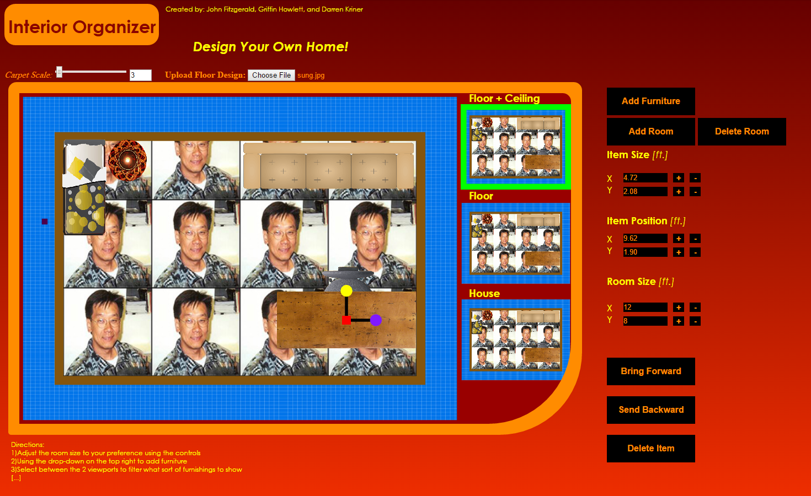

<table border="1" >
<tr>

<td align="center" style="text-align:left;">

  <br />


<b>Developers</b></br >
John Fitzgerald<br />
Griffin Howlett<br />
Darren Kriner <br/>
</td>

<td>
  <p><b><u>App Name: Interior Organizer</u></b></p>

   <p>Interior Organizer is a home decoration tool that allows you to virtually organize your room with furnishings. Use it to make sure that what you envision is 
   stylistic and feasible before you even start moving things around in your home! The app supports input of real world measurements so you can fine tune item sizes
   and positions to fir your real room.</p>
   <p>
   <a href="AppSrc/index">Click to play </a><br/>
   <a href="assets/screenshots/proposal_outline.pdf">Project proposal</a><br />

   
   
   

</td>

</tr>

</table>


